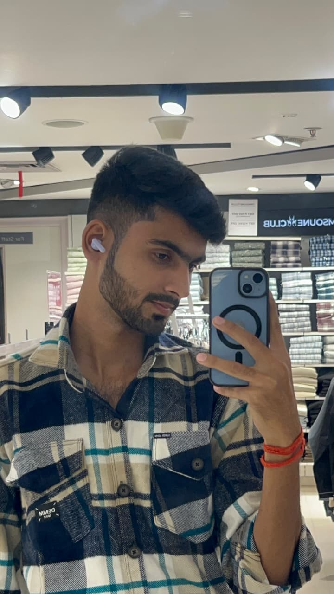

Hello World, I am
B.Tech CSE (AI) student at Babu Banarasi Das University, Lucknow. Passionate about bridging the gap between theoretical algorithms and real-world intelligence.

I am a driven B.Tech Computer Science and Engineering student specializing in Artificial Intelligence at Babu Banarasi Das University in Lucknow, India. My academic journey is fueled by a deep-seated passion for Artificial Intelligence, Machine Learning, Python, and modern Software Development.
I believe in leveraging technology to solve real-world problems. Whether I'm writing Python scripts, exploring neural networks, or building responsive web interfaces, I am constantly pushing myself to learn new technologies and adapt to the ever-evolving tech landscape.
2024 - 2028 (Expected)
Currently pursuing my undergraduate degree with a core focus on algorithms, data structures, and artificial intelligence models.
Total Repositories
Total Commits
Followers
Languages Used
Expected Completion: 2026
Expected Completion: 2026
Launched ambitious YouTube tech series (March 2026)
Active participant at BBDU cultural & tech festival
Currently looking for new opportunities, collaborations, and projects to learn from. My inbox is always open!
Say Hello